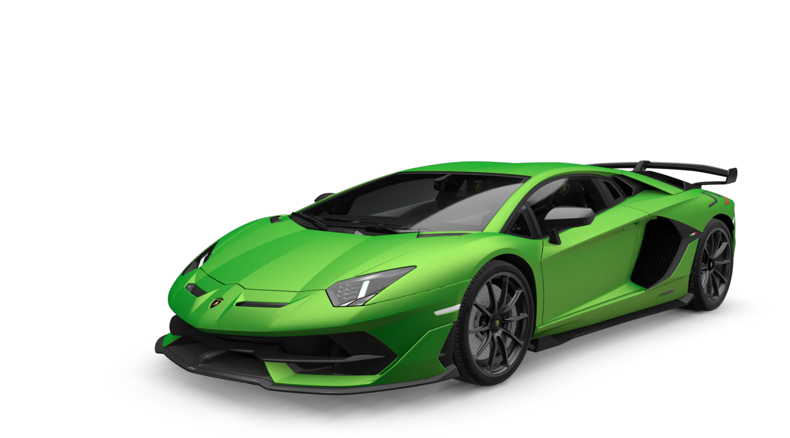
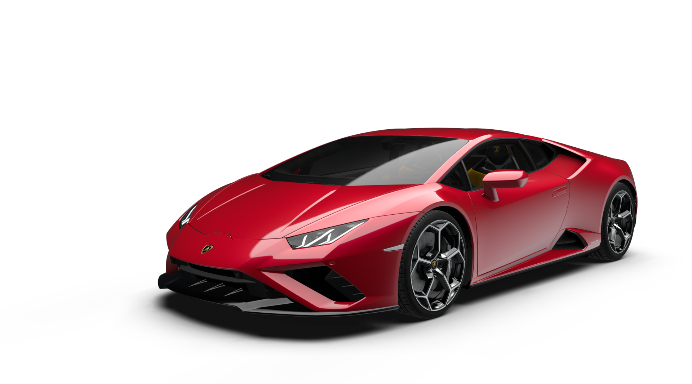
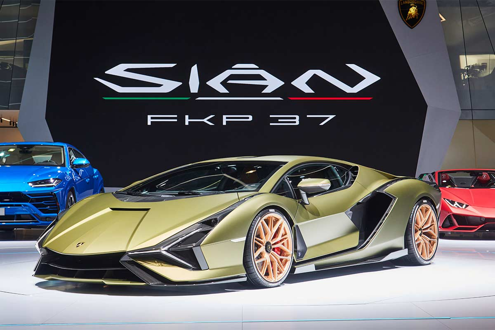

Lamborghini
Lamborghini Huracán STO

VISIÓN GENERAL
Un superdeportivo creado con el único objetivo de ofrecer toda la emoción y la tecnología de competición de un auténtico coche de carreras en un modelo legal de carretera. Los amplios conocimientos técnicos de Lamborghini en el universo de los deportes de motor, sumados a su tradición ganadora, se concentran en el nuevo Huracán STO: aerodinámica extrema, dinámica de conducción de competición, componentes ligeros y el V10 con mejor rendimiento hasta la fecha están preparados para liberar todas las emociones de la pista en su día a día, tiene una velocidad maxima de 310 km/h y acelera de 0-100 km/h en 3,0 segundos.VISIÓN GENERAL Lamborghini sabe perfectamente cómo afrontar los desafíos y por eso ha creado el Aventador SVJ. Para fusionar una tecnología de vanguardia con un diseño excepcional, sin transigir en nada. En un futuro gobernado por la tecnología se están perdiendo las emociones reales, pero en el futuro que estamos diseñando están siempre en primer plano, porque siempre es el ser humano quien conduce. |
 |
|  | VISIÓN GENERAL El Huracán EVO RWD lleva la evolución de la tecnología predictiva del modelo V10 de Lamborghini más popular de todos los tiempos a una dimensión de emociones de conducción puras y sin filtros, donde las capacidades de conducción y la mecánica marcan la diferencia. El «regreso de la tracción trasera» es una vuelta a los orígenes de la pureza mecánica, a la auténtica esencia de Lamborghini. |
VISIÓN GENERAL El alma de un coche superdeportivo y la funcionalidad de un SUV: Lamborghini Urus es el primer vehículo utilitario superdeportivo en todo el mundo. Con unas proporciones extremas, un diseño estremecedor, una dinámica de conducción extraordinaria y un rendimiento taquicárdico, Urus es la libertad en estado puro. Podrá experimentar cualquier carretera, desde el circuito a la arena pasando por el hielo, la grava o la piedra, conquistándolas todas. Podrá explorar terrenos nuevos y expresar lo que lleva dentro. |
 |
|  | VISIÓN GENERAL Sián FKP 37 es el primer superdeportivo alimentado por un V12 con tecnología híbrida basada en supercondensadores. Potencia, belleza y el motor V12 acoplado a un boost eléctrico dan vida a una joya de ingeniería y tecnología. Sián significa rayo en dialecto boloñés y subraya diferentes aspectos como su velocidad, que sobrepasa los 350 km/h. |